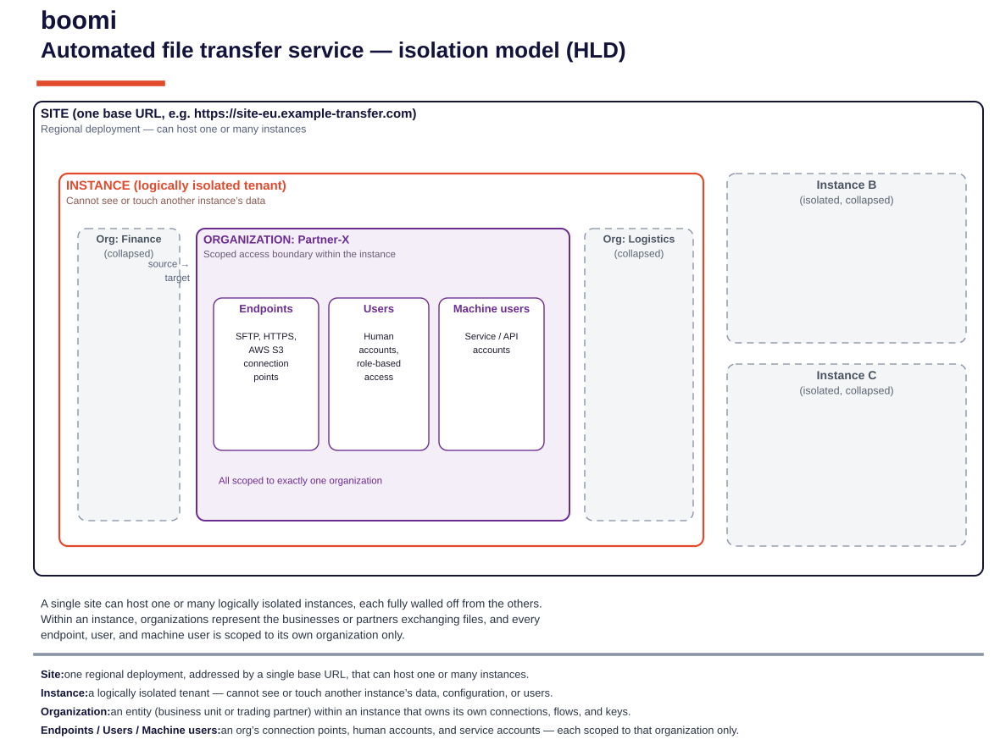
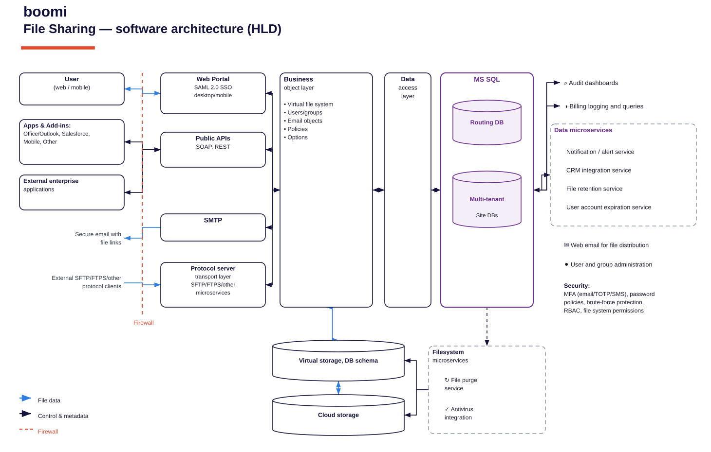

{kind=link}
{kind=link}
{kind=link}
{kind=link}
How to use this page
- This page holds two editable draw.io recreations of the supplied Boomi HLD screenshots: the Automated File Transfer isolation model and the File Sharing software architecture. Each is rendered inline below and downloadable from the sticky bar at the very top.
- For each diagram the bar offers three formats: ✎ draw.io the editable source (open at app.diagrams.net → File ▸ Open, or drag the file in), 🖼 SVG a crisp vector for docs/slides, and 🖼 PNG a raster for quick paste.
- To edit live from this site, use the “Open in editor” link under each figure — it loads the published
.drawiostraight into the diagrams.net viewer/editor. - Single source of truth: the
.drawio,.svgand.pngfor each diagram are all generated from one geometry model, so the editable source and the rendered images cannot drift apart. Geometry is validated programmatically (zero sibling-box overlaps, all connectors resolve) before publishing. - These are faithful transcriptions of the vendor HLDs — labels, tiers and groupings match the originals. They are reference artefacts; see the decision note in §3 before treating either as a target design.
1 · Automated file transfer service — isolation model (HLD)
The tenancy/isolation hierarchy for the automated file-transfer service: a Site (one regional base URL) hosts one or many logically isolated Instances; within an instance, Organizations form the scoped access boundary; and each organization owns its own Endpoints, Users and Machine users.

What the model asserts
- Site — one regional deployment, addressed by a single base URL, that can host one or many instances.
- Instance — a logically isolated tenant: it cannot see or touch another instance’s data, configuration or users (shown by the collapsed Instances B and C).
- Organization — a business unit or trading partner within an instance that owns its own connections, flows and keys; the source → target path is scoped within it.
- Endpoints / Users / Machine users — an org’s connection points (SFTP, HTTPS, AWS S3), human accounts (role-based), and service/API accounts — each scoped to exactly one organization.
2 · File Sharing — software architecture (HLD)
The layered software architecture for the file-sharing capability: client channels on the left cross a firewall into the entry layer (web portal, public APIs, SMTP, protocol servers), through the business object layer and data access layer to MS SQL (routing + multi-tenant site DBs), with supporting data and filesystem microservices, storage tiers, and cross-cutting security.

Tiers captured
- Client channels — user (web/mobile), apps & add-ins (Office/Outlook, Salesforce, mobile), external enterprise applications, and external SFTP/FTPS protocol clients; secure email with file links.
- Firewall — trust boundary between external clients and the entry layer.
- Entry layer — Web Portal (SAML 2.0 SSO), Public APIs (SOAP/REST), SMTP, and the SFTP/FTPS protocol-server transport microservices.
- Business object layer — virtual file system, users/groups, email objects, policies, options.
- Data access layer → MS SQL — routing DB plus multi-tenant site DBs.
- Data microservices — notification/alert, CRM integration, file retention, user-account expiration; plus audit dashboards and billing.
- Storage & filesystem microservices — virtual storage/DB schema and cloud storage, with file-purge and antivirus integration.
- Security — MFA (email/TOTP/SMS), password policies, brute-force protection, RBAC, file-system permissions.
3 · Architecture notes & decisions to own
Raised proactively so they are not carried silently into downstream design work.
★ Decision — reference model vs target design
Both diagrams are vendor HLDs describing how the Boomi file-transfer / file-sharing product is internally structured. Before either is cited in programme architecture, agree whether it is being used as a reference (explanatory) or a target (something we build/operate to). Only the former is safe to reuse as-is. Owner: Integration Architecture.
★ Decision — reconcile with config-over-construction
The isolation model maps cleanly to the standing principle — each approved interface should be an Organization/endpoint configuration, not a bespoke build. Confirm the target provisioning approach expresses new transfers as config rows (org → endpoints/users/machine users), not new components, so the vendor model and our engine stay aligned. Owner: Integration Architecture.
Security controls to map to programme standards
The file-sharing HLD names MFA (email/TOTP/SMS), RBAC and brute-force protection. These should be mapped to the programme’s auth/SSO position (note the deferred SSO/governance decision and the local-auth MVP risk) and to secret-store expectations (PAM gap G-14). Owner: Platform Security.
4 · How these were produced
- Each diagram is emitted from a single Python geometry model into three artefacts:
.drawio(mxGraph XML, editable),.svg(vector),.png(raster) — guaranteeing the editable source and the images match. - Before publishing, geometry is validated automatically: no overlapping sibling boxes, correct containment, and every connector resolves to real nodes. The draw.io XML is checked for well-formedness.
- Reference copies of every deliverable live in
docs/;assets/docs.zipbundles them and is refreshed on each update.
| Deliverable | Editable | Vector | Raster |
|---|---|---|---|
| Automated file transfer — isolation model | boomi-aft-isolation-model.drawio | .svg | .png |
| File Sharing — software architecture | boomi-file-sharing-architecture.drawio | .svg | .png |
Generated 28 July 2026 · Faithful draw.io recreations of Boomi HLD diagrams · single-source (drawio/svg/png) · Integration Architecture working artefacts. Use the sticky bar above to download the editable sources.